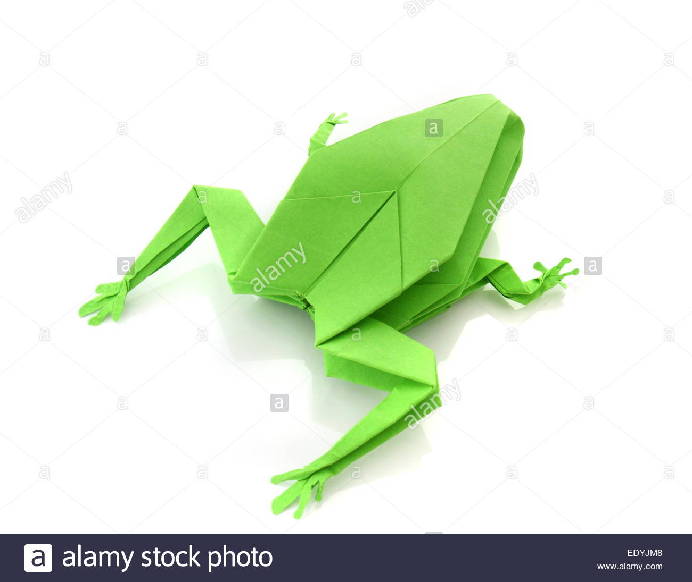
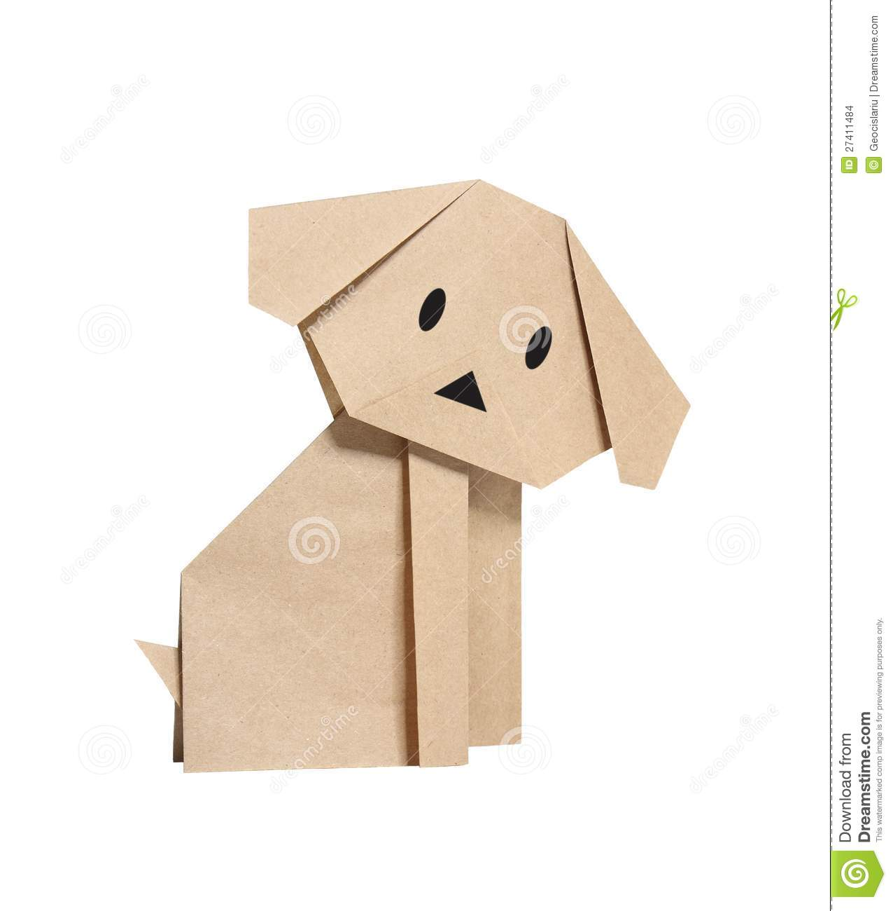

Camel
- Camels have three sets of eyelids and two rows of eyelashes to keep sand out of their eyes.
- Camels have thick lips which let them forage for thorny plants other animals can't eat.
- Camels can drink nearly 200 litres of water in one day.

Chameleon
- The chameleon’s tail cannot be broken off and regrown like those of many other lizards.
- Chameleons have the most distinctive eyes of any reptile.
- Chameleons have eyes that can look in two directions at once.

Pigeon
- Pigeons are incredibly complex and intelligent animals
- Pigeons are renowned for their outstanding navigation abilities
- Pigeons haev excellent hearing abilities

TeddyBear
- Teddy bears got their name from the story that Teddy Roosevelt refused to shoot a bear cub while on a hunting trip in 1902.
- The first toy stuffed bear was created by German toymaker Margarete Steiff.
- She created a soft plush with movable arms and legs and a friendly face in 1903.

Panda
- They have great camouflage for their environment.
- Their eyes are different to normal bears.
- They spend a lot of their day eating.

Frog
- A group of frogs is called an army.
- Frogs drink water through their skin.
- A frog's eyes and nose are on the very top of their heads.

Cicada
- Cicadas have one of the longest insect lifespans.
- Cicadas inundate forests as a survival mechanism
- Their lengthy life cycles may help them evade predators

Dog
- Dogs can sniff at the same time as breathing.
- Some dogs are incredible swimmers.
- Some have such good noses they can sniff out medical problems.